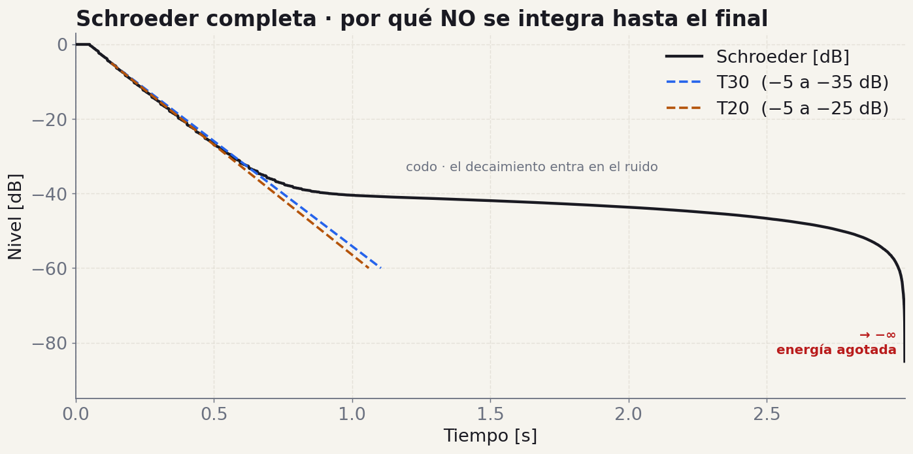
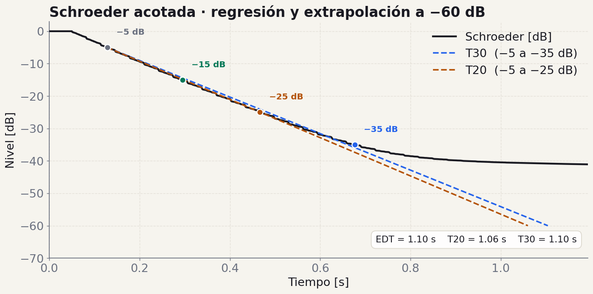
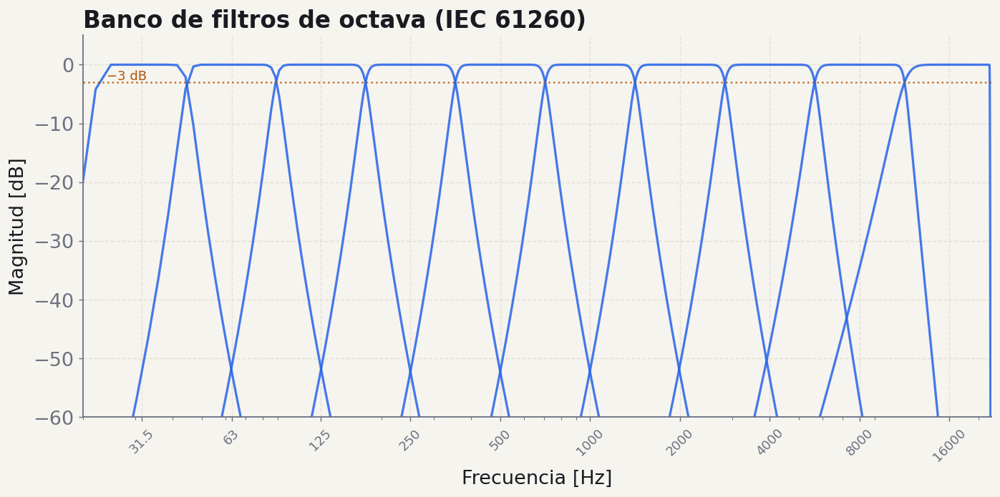
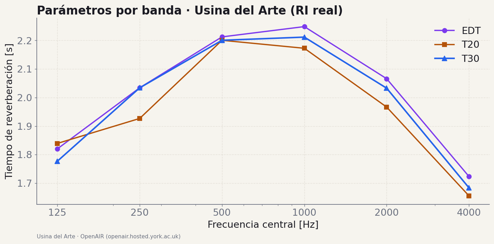
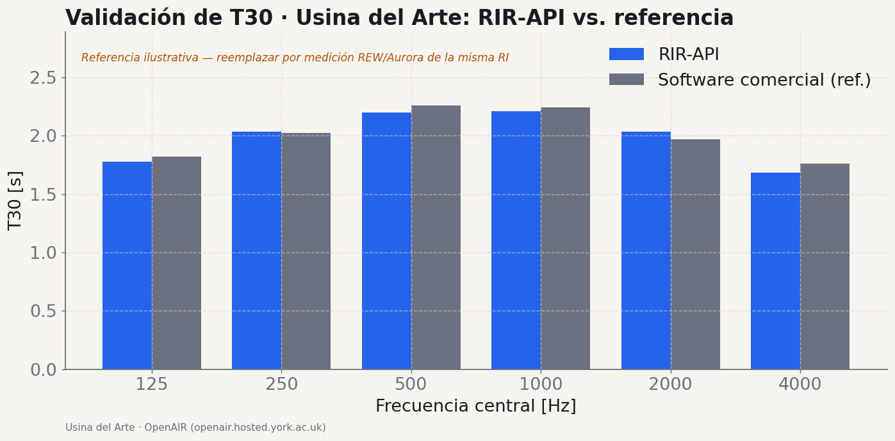

01/04 · función
suavizar_signal
Envolvente.
in
signal · ndarray
ventana · int
out
ndarray · envolvente
De las funciones sueltas a una API REST validada — el cierre del TP.
M3 vale el 30% — lo mismo que M1 y M2 juntos. La buena noticia: si M1 y M2 están bien, gran parte de M3 es integración y pulido, no código nuevo.
| Milestone | Entregan | Fecha | Peso |
|---|---|---|---|
| M0 El Plano | Arquitectura · repo · issues | 28 Abr | 5% |
| M1 Generación | Ruido rosa · sine sweep · playrec | 19 May | 15% |
| M2 Procesamiento | Cargar · sintetizar RI · deconv · filtros · log | 16 Jun | 20% |
| M3 Producto | Análisis · API REST · validación · informe · demo | 7 Jul — Demo Day | 30% |
main, después del último PR mergeadogit checkout main && git pull origin main
git tag -a v1.0.0 -m "M3: analisis acustico + API REST completa"
git push origin v1.0.0
# despues: crear el Release en GitHub con changelog resumido
El tag v1.0.0 apunta al commit real del producto en main, no a un README.
Hasta M2 tenían funciones sueltas en services/. En M3 esas funciones se convierten en un producto: un servicio web que cualquiera puede usar por HTTP, con resultados validados contra software comercial.
M3 son cuatro cosas encadenadas:
Una API que recibe una respuesta al impulso vía HTTP, la procesa y devuelve todos los parámetros acústicos relevantes, con resultados que coinciden con los de un software comercial de referencia.
Su propia versión de rir-api.onrender.com — la misma API de referencia de la cátedra que vienen comparando desde M0.
FastAPI organiza el código en tres capas que ya vienen en el template:
routers reciben el request HTTP y validan · services es el DSP puro que ya escribieron (M1+M2) · schemas son los modelos Pydantic de entrada/salida.
La clave de M3: no reescriben el DSP. Envuelven lo que ya tienen. Un router llama a un service y serializa el resultado con un schema.
GET /health | estado |
POST /api/v1/signals/* | pink-noise · sine-sweep · synthetic-ir |
POST /api/v1/filters/band | filtrado por bandas |
POST /api/v1/acoustics/parameters | + /parameters/by-bands |
POST /api/v1/analysis/impulse-response | análisis completo de la RI |
POST /api/v1/utils/* | schroeder · smoothing · log-scale |
Con validación Pydantic, errores HTTP (400/422/500), Swagger en /docs y ReDoc en /redoc generados solos.
Componen el pipeline: suavizar → integral_schroeder → regresion_lineal → calcular_parametros_acusticos. Extra que suma: metodo_lundeby(ri, fs) para truncar la cola de ruido. Spec en especificacion/m3_producto_final.md.

suavizar_signal con envolvente de Hilbert · la envolvente revela el decaimiento que el waveform crudo escondeEl primer paso del análisis es suavizar la RI para ver su decaimiento. La envolvente de Hilbert es preferible a la media móvil: no requiere elegir un tamaño de ventana y preserva mejor la estructura temporal.
Tip de comunicación: en el informe y la demo, muestren la envolvente / curva de decaimiento, nunca el audio crudo. El waveform crudo "lleno" no comunica nada; la envolvente muestra exactamente cómo cae la energía.
Spec · m3_producto_final.md §1 — scipy.signal.hilbert devuelve la señal analítica; su módulo es la envolvente.


Integral de Schroeder · integración inversa de la energía (np.cumsum(energia[::-1])[::-1]), en dB normalizada a 0 dB. Sobre el tramo recto, regresión lineal → pendiente $m$ → $T_{60} = -60/m$ (con $R^2 > 0.99$).
Nunca se integra hasta el final (izquierda: la curva se desploma a −∞). Se trunca en el cruce con el ruido usando metodo_lundeby y se mide sobre el tramo lineal (derecha). RI sintética con T60 conocido · Spec · m3_producto_final.md §2–3 · Schroeder 1965.
Cada parámetro es una regresión sobre un tramo distinto de la curva de Schroeder. Todos se extrapolan a −60 dB.
| Parámetro | Tramo de la curva | Qué mide |
|---|---|---|
| EDT Early Decay Time | 0 a −10 dB | Percepción subjetiva de la reverberación. Sensible a las primeras reflexiones. |
| T20 | −5 a −25 dB | Tiempo de reverberación con menos rango dinámico requerido. Útil con SNR limitado. |
| T30 | −5 a −35 dB | El estándar. Preferido cuando SNR > 45 dB. Es el que se reporta como T60. |
En ningún caso se mide directamente un decaimiento de 60 dB — no hay rango dinámico para eso en una sala real. Siempre se mide un tramo corto y se extrapola con la pendiente. Todo se calcula por banda de octava.

Los parámetros acústicos se calculan banda por banda: primero se filtra la RI en cada octava (IEC 61260), y sobre cada banda filtrada se corre el pipeline Schroeder → regresión. Esto ya lo tienen de M2.
Detalle crítico que se arrastra a M3: usen sosfiltfilt (fase cero, forward + backward), nunca lfilter. El retardo de grupo de un filtro causal desplaza el inicio del decaimiento y les infla el T60 en graves un 5–15%.
Clase 9 · m3 reutiliza filtro_octava de M2 · frecuencias centrales IEC 61260 (125 Hz a 4 kHz para la tabla de validación).

Este es el producto final del análisis: los tres parámetros contra la frecuencia central de cada banda. Es lo que devuelve calcular_parametros_acusticos y lo que su API expone en /api/v1/acoustics/parameters/by-bands.
Acá se ve una sala real: la Usina del Arte, con T30 ≈ 2 s y la forma de campana típica (máximo en medios, caída en graves y agudos por absorción). A diferencia de la RI sintética de las slides 6–7 (donde EDT ≈ T20 ≈ T30), acá los parámetros se separan: cuando EDT supera a T30 hay reflexiones tempranas fuertes; las diferencias entre bandas son información acústica real de la sala.
ISO 3382 · el mismo gráfico que van a ver en el frontend de cátedra cuando suban su WAV. Sintética = enseñar el método (T60 conocido) · real = validar el producto.

No alcanza con que los tests pasen. Hay que demostrar que los números coinciden con un software profesional sobre RIs reales.
Los tiempos de reverberación (EDT, T20, T30) no deben diferir en más de ±0.5 s respecto de la referencia.
Si su pendiente da la mitad que la de REW, hay un bug — probablemente en el filtrado o en los límites de Schroeder.
Grupos con validación sólida: lúzcanla en la presentación. Una tabla RIR-API vs REW banda por banda con diferencias < 0.5 s es lo más convincente que pueden mostrar.
M3 agrega tests de endpoints a los de las funciones. Cobertura mínima 80% en análisis + API.
/health responde 200pink-noise devuelve un WAVCon TestClient o httpx.AsyncClient. pytest --cov=app tests/ da el reporte.
De las devoluciones: un test que "pasa de casualidad" (indentado mal, o que esquiva la función rota) da falsa cobertura. Que cada test realmente ejercite la función.
En el Demo Day, mostrar la API corriendo no es opcional. Es parte central de la nota de presentación.
Guion sugerido de la demo (≈ 8 min):
uvicorn app.main:app --reload/docs (Swagger) y recorrer los endpoints/analysis/impulse-responsecurl desde la terminal para el mismo endpointTengan un WAV de prueba listo y la API ya levantada antes de arrancar. No debuggeen en vivo.
Su API tiene que hacer lo mismo que esta. Compárense contra ella hasta el final:
rir-api.onrender.com/docsSuban la misma RI a su API y a la de cátedra. Si los números coinciden, están listos.
Cambio respecto de años anteriores: el informe final va en Markdown (.md), no en Quarto ni LaTeX.
¿Por qué?
docs/informe.md) y viaja con el código.Las imágenes se referencian con rutas relativas: .
| Sección | Peso |
|---|---|
| Resumen | 5% |
| Introducción · objetivos · ISO 3382 | 10% |
| Marco teórico · con referencias | 10% |
| Desarrollo · arquitectura, diseño, funciones | 25% |
| Resultados · gráficas, tablas, validación | 30% |
| Conclusiones · análisis crítico, aprendizajes | 20% |
Referencias en formato APA o IEEE. Lo que cambia es el formato (Markdown), no el contenido ni los pesos.
Los "Resultados" pesan 30%. Estas tres figuras son el corazón — las mismas que vieron en estas slides.
Diagrama de arquitectura del software · RI vs. envolvente · parámetros por banda · tabla comparativa RIR-API vs. referencia.
Título y ejes rotulados con unidades · legibles al proyectar · para la RI mostrar envolvente/decaimiento, nunca audio crudo · una idea por figura.
pytest en verde · cobertura > 80% en análisis y API/docs) y ReDoc (/redoc) funcionandocurl.md con las 3 gráficas y la tabla de validaciónAI_LOG.md en la raíz, con entradas de M0 a M3v1.0.0 en main, apuntando al commit final realCI que engaña: si ruff corta antes de pytest, los tests nunca corren en CI aunque pasen local. Y si el workflow lintea la carpeta equivocada (src/ en vez de app/), no valida nada. Revisen el YAML.
Los tropiezos más comunes de las entregas anteriores. Ninguno es de DSP — todos son de proceso.
pyproject.toml desactualizadomain dejado para la hora de cierre>>>>>>>) commiteado → rompe todos los testsModuleNotFoundError: app en CI → falta pythonpath = ["."] en pyproject.tomlruff sin resolver → ruff check --fix + ruff formatNotImplementedError olvidado arriba de la función realoutput.txt, scripts de prueba)La lección transversal: lo que rompe las entregas casi nunca es el procesamiento de señales — es Git, CI y prolijidad. Dediquen tiempo real a eso esta semana.
Estructura recomendada:
| Introducción | 3 min | contexto, equipo, arquitectura |
| Desarrollo técnico | 8 min | demo en vivo de la API |
| Resultados | 6 min | validación, precisión |
| Reflexiones | 3 min | dificultades, aprendizajes |
Material visual legible al proyectar. Gráficos grandes, con ejes y unidades.
Cada grupo tiene que estar preparado para responder:
¿Qué fue lo más valioso que aprendieron desarrollando este proyecto y cómo lo aplicarían en su carrera profesional?
No es un trámite. Piénsenla en grupo antes del Demo Day.
Esta semana: pulir la API, validar contra REW, escribir el informe y ensayar la demo.